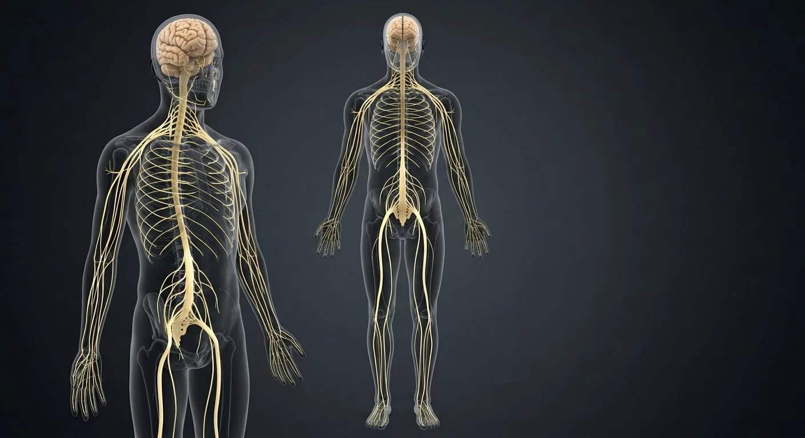

Cervical plexusBrachial plexusIntercostal nervesLumbar plexusFemoral nerveSciatic nerveBrainCerebellumBrainstemVagus nerve (CN X)Spinal cordDorsal root ganglionSympathetic trunkSacral plexus- 01Brain
- 02Cerebellum
- 03Brainstem
- 04Spinal cord
- 05Cervical plexus
- 06Brachial plexus
- 07Intercostal nerves
- 08Lumbar plexus
- 09Sacral plexus
- 10Sciatic nerve
- 11Femoral nerve
- 12Sympathetic trunk
- 13Vagus nerve (CN X)
- 14Dorsal root ganglion
How this part of the body works
The master page of control. Follow the cord down, watch plexuses redistribute fibres to limbs, and see where the autonomic chain hugs the spine.
Read the anatomy, part by part
These 14 structures describe anatomy related to the chapter’s regional illustration. Each entry separates location, function and a clinical point.
Brain
Cerebrum, cerebellum and brainstem inside the cranial vault.
What it doesIntegration, consciousness, motor planning and autonomic control.
Clinical connectionHead injury scales from concussion to diffuse axonal injury.
Cerebellum
Hindbrain structure behind the brainstem.
What it doesCoordination, balance and motor learning.
Clinical connectionLesion → intention tremor and ataxia on the same side.
Brainstem
Midbrain, pons and medulla connecting cord to brain.
What it doesVital centres: respiration, heart rate, consciousness.
Clinical connectionBrainstem death is legal death in most jurisdictions.
Spinal cord
31-segment cord from foramen magnum to L1–L2.
What it doesTwo-way tracts plus segmental reflex circuits.
Clinical connectionCord transection level predicts deficit pattern precisely.
Cervical plexus
Nerve network in the posterior triangle of the neck.
What it doesNeck muscles and skin; phrenic nerve to diaphragm.
Clinical connectionC3-4-5 keeps the diaphragm alive — injury above C4 stops breathing.
Brachial plexus
Roots-trunks-divisions-cords-branches behind the clavicle.
What it doesAll motor and sensory supply of the upper limb.
Clinical connectionErb's palsy (C5-6) from birth traction: waiter's-tip hand.
Intercostal nerves
Ventral rami running in subcostal grooves.
What it doesChest-wall muscles and segmental skin band.
Clinical connectionShingles follows one intercostal dermatome.
Lumbar plexus
Network within psoas major.
What it doesAnterior thigh and medial leg supply.
Clinical connectionFemoral nerve block anaesthetises the anterior thigh.
Sacral plexus
Plexus on the piriformis wall of the pelvis.
What it doesGluteal region, perineum and the sciatic nerve.
Clinical connectionSciatica radiates along its branches down the leg.
Sciatic nerve
Largest nerve in the body (L4–S3).
What it doesHamstrings and all muscles below the knee.
Clinical connectionWrong gluteal injection site can injure it — use upper outer quadrant.
Femoral nerve
L2–L4 branch under the inguinal ligament.
What it doesQuadriceps power and anterior-thigh sensation.
Clinical connectionLoss → buckling knee and absent knee jerk.
Sympathetic trunk
Chain of ganglia from skull base to coccyx.
What it doesFight-or-flight: heart up, gut down, pupils wide.
Clinical connectionHorner's syndrome: ptosis, miosis, anhidrosis.
Vagus nerve (CN X)
Longest cranial nerve, neck to pelvis.
What it doesParasympathetic brake on heart, lungs and gut.
Clinical connectionVagal stimulation terminates SVT — the Valsalva trick.
Dorsal root ganglion
Sensory cell-body cluster on each dorsal root.
What it doesHouses pseudounipolar sensory neurons.
Clinical connectionVaricella hides here and re-emerges as shingles.
Deeper structures and tissue layers
These 6 additional entries give anatomical context. They are deliberately not assigned a photographic pin on the regional image.
Related deep chapters: Cerebrum · cortex & deep pathways, Brainstem & cerebellar circuitry, Brachial plexus · arm nerves.
Cortical gray matter
Reference pointerNeuronal cell-body sheet folded into gyri and sulci.
What it doesIntegrates sensory, motor and association information.
Clinical connectionRegional cortical lesions give different deficits.
Midbrain
Reference pointerRostral brainstem around cerebral aqueduct between diencephalon and pons.
What it doesHosts III/IV-related nuclei and visual/auditory orienting circuits.
Clinical connectionMidbrain lesions can combine ocular and long-tract signs.
C5–T1 ventral rami
Reference pointerFive spinal nerve ventral rami build the typical plexus; not the intrathecal dorsal/ventral rootlets.
What it doesProvide segmental motor and sensory fibers to upper limb.
Clinical connectionAnatomy can be prefixed C4–C8 or postfixed C6–T2.
Layer I · molecular
Reference pointerSuperficial neuropil-rich layer below pia, with relatively few neuronal somata.
What it doesSupports horizontal intracortical connections.
Clinical connectionSix-layer plan is a template, not identical in every area.
Superior colliculus
Reference pointerDorsal midbrain paired structure.
What it doesCoordinates orienting eye/head movements to visual stimuli.
Clinical connectionNot the origin of the optic nerve.
Interscalene passage
Reference pointerRoots and trunks pass between anterior and middle scalene muscles.
What it doesConveys plexus out of neck.
Clinical connectionSite of interscalene regional anesthesia.
Five questions about Nervous system — overview
Short answers grounded in the structures described above. Use the illustrated guide for anatomical context.
What are the main divisions of the nervous system?
The central nervous system consists of brain and spinal cord. Peripheral nerves and ganglia connect it to the rest of the body; autonomic circuits regulate many involuntary functions.
How do nerves carry information between the body and brain?
Sensory pathways bring information toward the central nervous system, and motor pathways send commands outward. Spinal and cranial nerves also support reflexes and organ control.
What is the brain?
Cerebrum, cerebellum and brainstem inside the cranial vault. Function: Integration, consciousness, motor planning and autonomic control.
Where is the brainstem located?
Midbrain, pons and medulla connecting cord to brain. Function: Vital centres: respiration, heart rate, consciousness.
What is the function of the cervical plexus?
Function: Neck muscles and skin; phrenic nerve to diaphragm. Nerve network in the posterior triangle of the neck.
Related anatomy guides
Follow these connected structures and body systems in the illustrated atlas.
 Brachial plexus · arm nervesTrace the arm nerve network from spinal roots through trunks, divisions and cords to five terminal nerves.↗
Brachial plexus · arm nervesTrace the arm nerve network from spinal roots through trunks, divisions and cords to five terminal nerves.↗ Cerebrum · cortex & deep pathwaysTrace cortex, white matter, corpus callosum, basal nuclei and thalamus on a realistic coronal section.↗
Cerebrum · cortex & deep pathwaysTrace cortex, white matter, corpus callosum, basal nuclei and thalamus on a realistic coronal section.↗ Meninges, CSF & venous sinusesFollow dura, arachnoid and pia; then CSF from choroid plexus to subarachnoid drainage.↗
Meninges, CSF & venous sinusesFollow dura, arachnoid and pia; then CSF from choroid plexus to subarachnoid drainage.↗ Brainstem & cerebellar circuitryLocate brainstem levels, cranial-nerve nuclei, pyramids and cerebellar peduncles, cortex and nuclei.↗
Brainstem & cerebellar circuitryLocate brainstem levels, cranial-nerve nuclei, pyramids and cerebellar peduncles, cortex and nuclei.↗Further reading
General anatomy references and related source chapters for continued study. These links do not make the digital illustrations clinical images or certify every anatomical variant.
This educational page is not medical advice and has not undergone formal clinical peer review. Spotted an error? Contact the editor.
Open the realistic interactive plate, label lines, focus view and self-test.